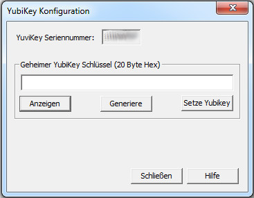
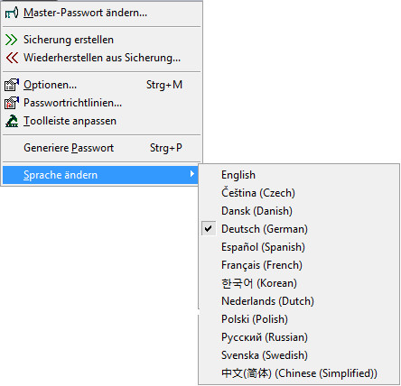

Bei der Auswahl von Optionen... erscheint ein Dialog mit mehreren Reitern. Viele der Einstellungen in Password Safe können hier eingesehen und bearbeitet werden. Um mehr über einen bestimmten Reiter zu erfahren, wählen Sie ihn unten aus:
Hier können Sie die standardmäßigen und benannten Passwortrichtlinien verwalten. Es können bis zu 255 benannte Passwortrichtlinien eingerichtet werden.
Der Name einer benannten Passwortrichtlinie darf nicht länger als 255 Zeichen sein.
Toolleiste anpassen
Wählen Sie die Symbole aus die in der Toolleiste dargestellt werden sollen (oder auch nicht). Die Reihenfolge der Symbole kann dabei umgestaltet werden.
Generiere Passwort
Erstellt ein Passwort nach der eingestellten Passwortrichtlinie, und legt das generierte Passwort nach Drücken der Taste Generierung in die Zwischenablage ab.
Das Passwort in der Zwischenablage kann dann von anderen Anwendungen verwendet werden. Dazu können Sie die standardmäßige Passwortrichtlinie,
eine benannte Passwortrichtlinie oder eine spezifische Richtlinie (mit dem Dialog eingegeben) auswählen.
Yubikey
Hiermit können Sie Ihr optionales Gerät YubiKey einstellen, um es als Zugang zu Ihrer Password Safe Datenbank einzusetzen,
oder auch um ein Sicherungs-YubiKey zu erzeugen, wenn es mal verloren oder kaputt gehen sollte.

Einstellen des YubiKey
Stecken Sie den YubiKey in einen USB-Anschluss Ihres Computers.
Wählen Sie den Menüpunkt Verwalten->Yubikey... aus.
Der Dialog YubiKey Konfiguration erscheint.
Die Seriennummer des YubiKey sollte angezeigt werden. Wenn dieses Feld
leer ist, müssen Sie nachprüfen ob der YubiKey richtig angesteckt ist.
Drücken Sie die Taste Generiere. Dies erzeugt einen 20 Byte langen geheimem
Schlüssel der auf den YubiKey geschrieben wird. Anschließend wird dieser Schlüssel
verwendet um den Zugang zu Ihrer Datenbank zu realisieren.
Drücken Sie die Taste Setze YubiKey. Der generierte Schlüssel wird auf
den YubiKey abgelegt, und gleichzeitig in verschlüsselter Form in die Password Safe
Datenbank, um damit ein Sicherungs-YubiKey zu konfigurieren.
Wenn die Konfiguration erfolgreich war, schließt der Dialog. Wenn nicht, erscheint eine
Fehlermeldung mit der Beschreibung des Fehlers.
Drücken Sie die Taste Schließen um das Dialogfenster zu verlassen.
Hinweis: Nach der Konfiguration des YubiKey, müssen Sie das Passwort der Datenbank abändern
um YubiKey einsetzen zu können. Dies ist in Master-Passwörter ändern beschrieben.
Sicherungs-YubiKey erstellen
Stecken Sie den YubiKey in einen USB-Anschluss Ihres Computers.
Wählen Sie den Menüpunkt Verwalten->Yubikey... aus.
Der Dialog YubiKey Konfiguration erscheint.
Die Seriennummer des YubiKey sollte angezeigt werden. Wenn dieses Feld
leer ist, müssen Sie nachprüfen ob der YubiKey richtig angesteckt ist.
Drücken Sie NICHT auf die Taste Generiere. Der angezeigte Schlüssel
im Feld "Geheimer YubiKey Schlüssel" ist der in dieser Datenbank abgelegter Schlüssel.
Dieser Schüssel wird dann auf dem Sicherungs-YubiKey geschrieben.
Drücken Sie die Taste Setze YubiKey. Der Schlüssel wird auf
den Sicherungs-YubiKey abgelegt.
Wenn die Konfiguration erfolgreich war, schließt der Dialog. Wenn nicht, erscheint eine
Fehlermeldung mit der Beschreibung des Fehlers.
Drücken Sie die Taste Schließen um das Dialogfenster zu verlassen.
Sprache ändern

Wenn Sie bei der Installation von Password Safe alle derzeit zur Verfügung stehenden, zusätzlichen Spachen DLLs installiert haben
(dies ist Standard), sind Sie in der Lage zwischen alle diese Sprachen hin- und herzuschalten, ohne das Programm zu verlassen ("on-the-fly").
Nach der Sprachenumschaltung stehen alle Menüs, Dialoge und Meldungen dann in der ausgewählten Sprache zur Verfügung.
Die aktuell eingestellte Sprache ist mit einem Haken versehen.